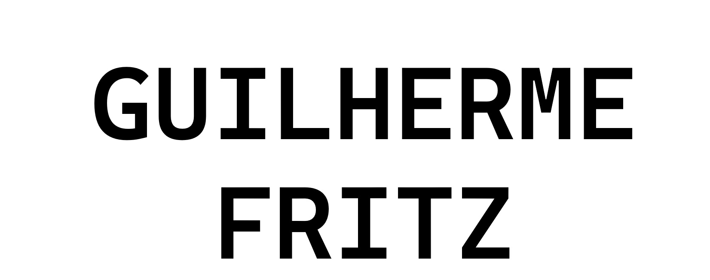

Desenvolvedor
Front End
Localizado em Brasília.

Localizado em Brasília.
Bem-vindo ao meu portfólio! Aqui você vai conhecer a minha trajetória e os meus projetos.
Me especializei em Desenvolvimento Front-end, adquirindo habilidades sólidas na criação de sistemas, interfaces responsivas e interativas utilizando HTML, CSS , JavaScript e React.
Além disso, durante minha formação, desenvolvi competências em manipulação e análise de dados, com ênfase na utilização de Python, SQL e no gerenciamento de bancos de dados relacionais.
O projeto Clima no mundo pesquisa por meio de API a temperatura,velocidade do vento e como está o céu de qualquer lugar do Mundo.
O Conversor Inteligente facilita a conversão de câmbio em tempo real. Utiliza conversão via API com fallback local, histórico de conversões no LocalStorage e atualização dinâmica do DOM.
O Old Skull Motos é um projeto de site para uma empresa fictícia especializada em motocicletas. Construído com HTML e CSS.
O Basket Legends 🏀 é um projeto web dedicado a homenagear grandes lendas do basquete. Desenvolvido com HTML e CSS.
Projeto de site para uma seguradora fictícia, desenvolvido com HTML e CSS utilizando Flexbox.
Projeto com consultas SQL avançadas no Databricks, explorando dados globais de vendas de jogos.
Projeto de análise descritiva de dados históricos de vendas globais entre 2016 e 2018.
🎓 Minha mais recente experiência acadêmica foi a conclusão do curso tecnólogo em Ciência de Dados pela Cruzeiro do Sul. Além disso, me mantenho sempre atualizado com cursos intensivos online.